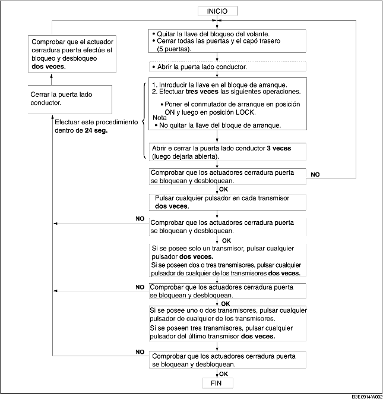

REGISTRACION CODIGO ID DEL TRANSMISOR
B3E091467543W03
-
Nota
-
• Cuando se registra el código ID en un módulo de control telemando, comprobar que otros transmisores de las cercanías no se activen.
-
• Tras haber registrado el código ID, quitar la llave del bloqueo de dirección y comprobar que todas las puertas se cierren/abren con normalidad utilizando el transmisor.
